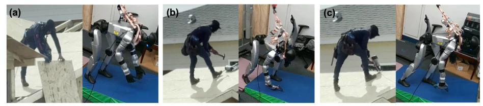
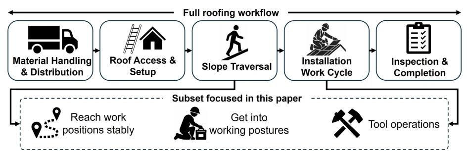
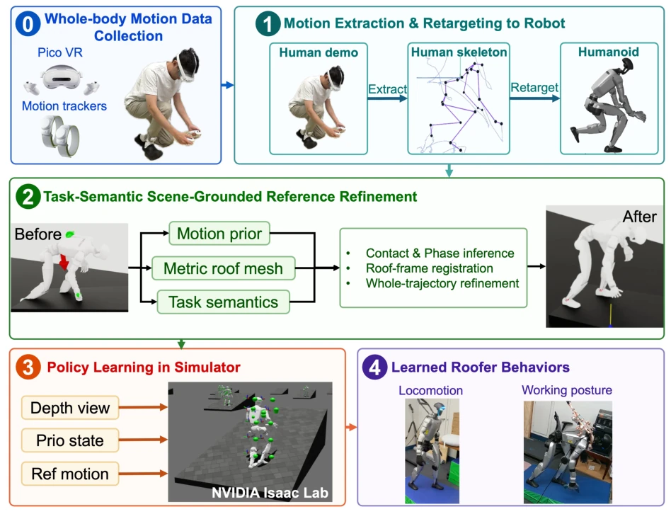
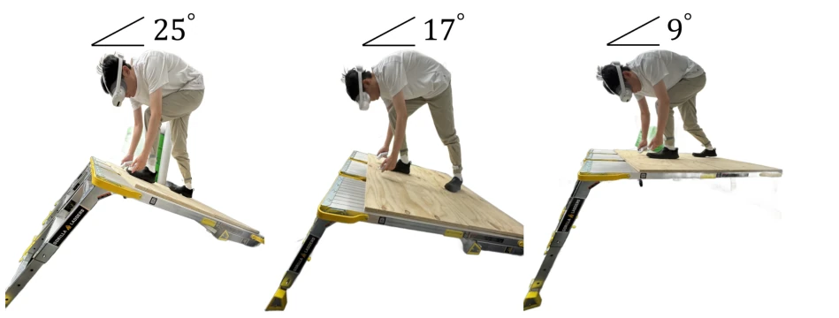
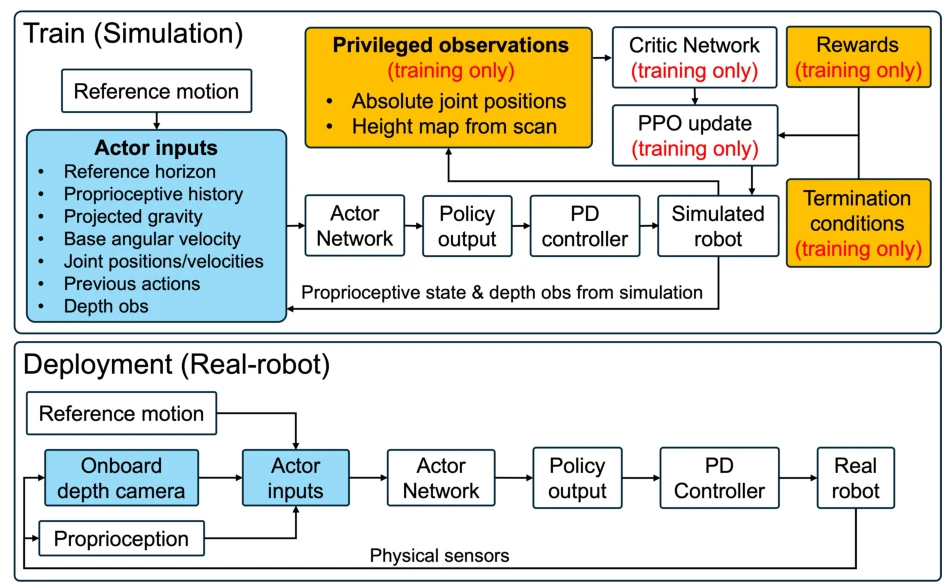
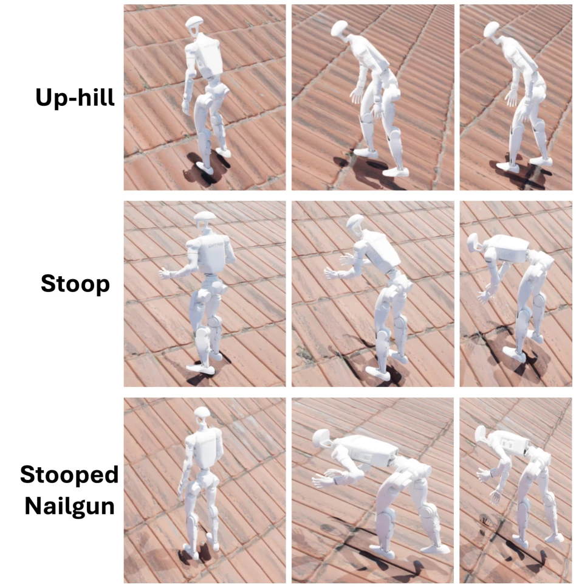
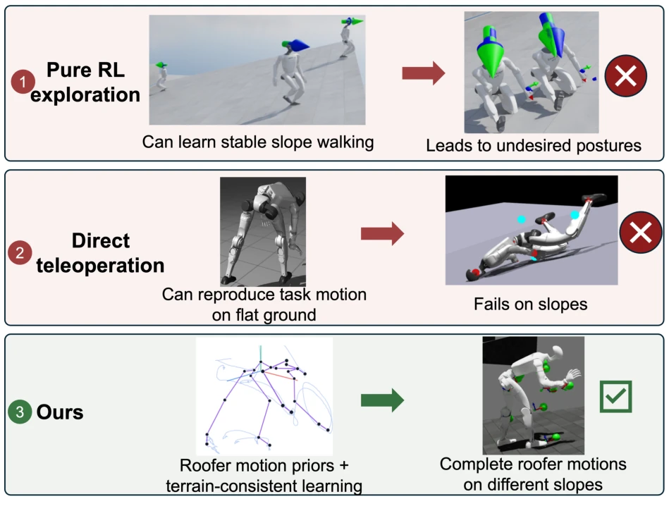
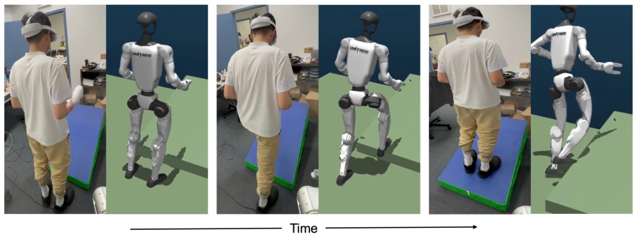
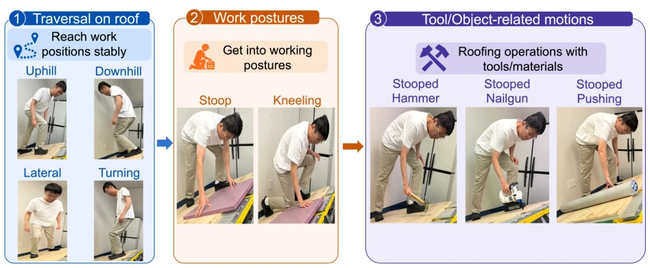
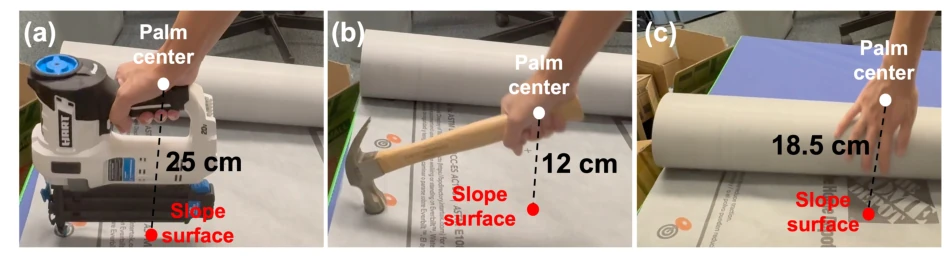

This paper hands a "hard hat" to roof workers (and their avatar robots). The authors did not pursue fancy large models, but rather faithfully "extracted" human motions and rigidly mapped them into the Unitree G1 skeleton. The most ingenious aspect is that they discovered direct retargeting causes feet to miss or hands to clip, so they developed a "scene grounding" optimization layer to anchor the motions onto the roof model. This is far more pragmatic than simply imitating human motions. Although it is only a specific task for the G1, it is significantly superior to robots that can only walk. However, do not expect this to directly go onto roofs to tear tiles, as only three slopes were tested, and it relies on simulation training, with real-world testing limited to specific motions. For the dream of "humanoid robots performing renovation work", this step is quite steady, but still far from "all-around". After all, teaching a robot to avoid slipping and self-injury on slopes is much harder than learning to walk in a straight line.
研究动机Motivation
屋顶作业是建筑界最危险的活，坠落是头号杀手。现有机器人要么只能飞（UAV），要么只能爬（轮式/四足），没法像人一样用工具干活。人形机器人虽然形态合适，但直接重定向人类动作（Araújo et al. 2026）在斜坡上容易脚底打滑或手穿模。Li et al. (2024a) 等研究集中在感知和缺陷检测，没解决全身协调问题。Kuindersma et al. (2016) 的优化方法适合平地，但屋顶需要平衡与任务的强耦合。Radosavovic et al. (2024b) 的 locomotion 虽强，但缺乏任务语义。因此，需要一种能同时满足支撑、工作间隙和非穿透约束的学习框架。
Roof work is the most dangerous task in the construction industry, with falls being the leading cause of death. Existing robots can either only fly (UAV) or only crawl (wheeled/quadruped), unable to operate tools like humans. Although humanoid robots have a suitable morphology, directly retargeting human motions (Araújo et al. 2026) easily leads to foot slipping or hand clipping on slopes. Research by Li et al. (2024a) and others focuses on perception and defect detection, failing to address whole-body coordination. Kuindersma et al. (2016)'s optimization method is suitable for flat ground, but roofs require strong coupling between balance and tasks. Radosavovic et al. (2024b)'s locomotion is strong but lacks task semantics. Therefore, a learning framework is needed that simultaneously satisfies support, workspace, and non-penetration constraints.

Fig. 1. We enable humanoid robots to learn human roofer-style whole-body locomotion skills that transfer from simulation to a physical Unitree G1. Demonstrated behaviors on a slope include (a) bending to reach objects from a low place, (b) hold and brandish a hammer, and (c) hold a nailgun and position it close to the slope surface.

Fig. 2. Roofing workflow scope. This paper focuses on slope traversal, working-posture transitions, and representative tool-operation motions.
The overall process is divided into four steps: VR capture, retargeting, scene-grounded reference optimization, and RL policy learning. First, PICO is used to capture human motions and retarget them to the G1. The core innovation is "scene-grounded reference optimization": utilizing roof mesh metrics, reference trajectories are corrected via multi-objective optimization (support, workspace, non-penetration, smoothness), rather than simple translation. Optimization variables include root position normal offset and joint subsets. Next, the RL policy is trained in simulation, introducing an "execution-aware reward" to force the policy to maintain hand-roof distance and prevent penetration under dynamic errors. This is equivalent to equipping the robot with a "virtual ruler" that constantly checks if hands and feet cross boundaries.

Fig. 4. Overview of the proposed humanoid roofer skill learning framework, including VR-based motion collection, humanoid retargeting, task-semantic scene-grounded reference refinement, and policy learning in simulation.

Fig. 5. Human demonstration collection on an angle-adjustable sloped-roof platform.

Fig. 6. Training and deployment information flow of the asymmetric actor-critic policy. Privileged observations are available only to the critic during training, whereas the deployed actor uses reference motion, onboard depth, and proprioception to generate PD-controlled whole-body motion.
81 motion clips were collected on 9°, 17°, and 25° slopes. Pure RL and zero-shot teleoperation were compared in simulation. Ablation experiments show that reference optimization (C) and execution learning (D) are both indispensable. In real-world testing, workspace clearance errors for nail gun, hammering, and pushing tasks were controlled within 0.256-0.531 cm, with a success rate of 3/3. Compared to the over-squatting of pure RL and the imbalance of teleoperation, this method reproduced motions such as uphill climbing and hammering in physical experiments, with base motion error below 80 mm. This proves the effectiveness of scene constraints on slope operations.

Fig. 8. Examples of learned roofer-style motions in simulation, including uphill walking, stooping, and stooped nailgun operation on a sloped-roof scene.

Fig. 9. Representative failure modes of the external baselines. Reward-only learning produces a highly crouched motion that deviates from the human-derived pushing prior, whereas zero-shot SONIC teleoperation loses balance while stepping onto the roof.

Fig. 10. Zero-shot SONIC teleoperation failed to track the human motion of "stepping onto a slope".
其他图片Other Figures

Fig. 3. Roofing-oriented motion taxonomy. The studied skills include roof traversal, work postures, and representative tool/object-related motions.

Fig. 7. Measurement of task-specific hand-surface target clearances from human roofing demon- strations: (a) 25 cm for nailgun operation, (b) 12 cm for hammering, and (c) 18.5 cm for lateral material pushing.